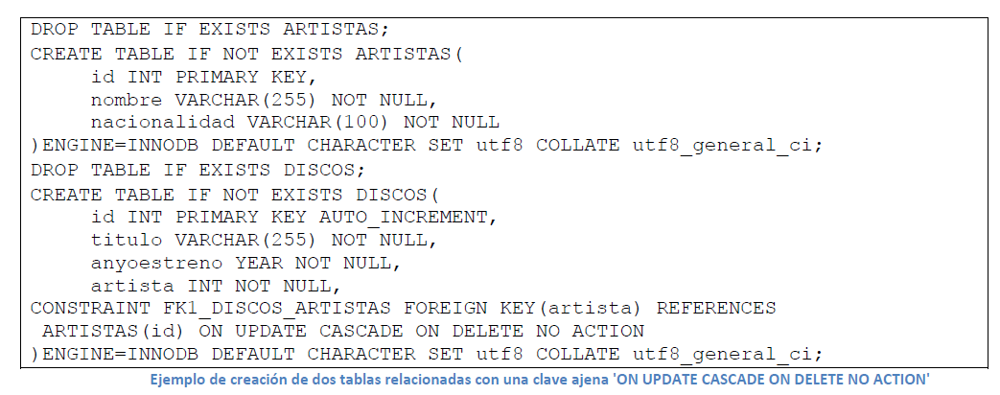

En este apartado se van a estudiar de forma detallada todas las posibilidades que ofrece el DDL de MySQL en cuanto a la definición de restricciones de integridad:
- restricciones de obligatoriedad
- restricciones de clave primaria
- clave alternativa
- clave ajena, así como las opciones de eliminación y actualización.
Restricción de obligatoriedad
La primera restricción que vamos a estudiar es la restricción de obligatoriedad (‘NOT NULL’) que establece que un atributo debe contener obligatoriamente un valor y que por tanto no puede aceptar nulos (‘NULL’). Esta restricción se indicará dentro de la orden ‘CREATE TABLE’, tal y como se muestra en el siguiente cuadro de código:
A continuación se realizará la misma prueba, pero esta vez para atributos de tipo fecha (‘DATE’), a partir del código que se muestra en el siguiente cuadro de código:
El dominio ‘DATE’ es un tipo especial de cadena de caracteres, formado por una cadena con el formato ‘aaaa-mm-dd’. Cuando se realiza una inserción, si no se respeta este formato o si el sistema detecta que no se ha insertado valor alguno en un atributo obligatorio, se insertará el valor ‘0000-00-00’, como puede verse en la imagen siguiente:
Algo similar ocurrirá en el caso de atributos del tipo hora (‘TIME’), que son también un tipo especial de cadenas de caracteres que tienen el formato ‘hh:mm:ss’. En el siguiente cuadro de código en la página siguiente se muestra la creación de una tabla con un atributo obligatorio y otro opcional, ambos del tipo ‘TIME’:
Para atributos que contienen números reales, el sistema insertará el valor 0.00 (para un atributo ‘NUMERIC(10,2)’). En el siguiente cuadro de código se muestra la creación de una tabla con atributos reales:
Restricción de clave primaria
La restricción de clave primaria se realiza mediante la cláusula ‘PRIMARY KEY’ dentro de la orden ‘CREATE TABLE’ o bien dentro de la orden ‘ALTER TABLE’. Las claves primarias pueden ser simples (formadas por un solo atributo) o compuestas formadas por más de un atributo. Si la clave primaria es simple puede declararse en la misma línea donde se define el atributo, o bien debajo de la definición antes de cerrar la orden ‘CREATE TABLE’, tal y como mostramos en la siguiente tabla:

Restricción de clave alternativa
La restricción de clave alternativa representa un mecanismo de direccionamiento secundario o alternativo a nivel de tuplas en un sistema de bases de datos relacional. MySQL permite la definición de claves alternativas mediante la cláusula ‘UNIQUE’ dentro de la orden ‘CREATE TABLE’, tal y como se muestra en el cuadro de código siguiente:

En la tabla anterior se muestra el código SQL que permite crear una tabla que tiene una clave primaria y cuatro claves alternativas. Obsérvese que a diferencia de las claves primarias que siempre son ‘NOT NULL’ por la regla de integridad de las entidades del modelo relacional que establece que ningún componente de clave primaria puede contener valores nulos, las claves alternativas sí pueden contener valores nulos.
Otra diferencia obvia que establece el modelo relacional es que una tabla puede tener cero o más claves alternativas y una y obligatoriamente solo una clave primaria. Como se observa en el código anterior, la definición de las claves alternativas se puede hacer a la derecha de la definición del atributo o debajo.
Otra diferencia con respecto a las claves primarias, es que no se puede definir una clave alternativa compuesta.
Hay que evitar crear demasiadas claves alternativas sobre todo si no son de tipos enteros, ya que el sistema las implementas como índices, por lo que en la inserción, eliminación o actualización de datos, debe chequear la tabla completamente para comprobar que no se repite el valor, lo que puede provocar que estas operaciones requieran mucho tiempo.
Una forma de eliminar una clave alternativa es mediante la orden ‘ALTER TABLE tbl_name DROP INDEX index_name’, pero únicamente funcionará si la clave alternativa ha sido descrita debajo de la definición de los atributos y tiene un nombre. En la siguiente imagen se muestra la ejecución de la esta orden y se muestra el diseño de la tabla obtenido mediante el comando ‘DESCRIBE’:
Restricción de clave ajena
La restricción de clave ajena o clave foránea representa el mecanismo de integridad referencial que asegura la consistencia de las bases de datos relacionales. Como se dijo anteriormente, para que el sistema MySQL exija que se cumpla la integridad referencial al insertar un valor para un atributo clave ajena, las tablas deben ser creadas con el motor (‘ENGINE’) “InnoDB”.
La cláusula ‘FOREIGN KEY’ que se incluye dentro de la orden ‘CREATE TABLE’ permite especificar las claves ajenas. Esta cláusula se completa con las opción ‘REFERENCES’ que establece el atributo (recomendablemente clave primaria) de la tabla a la que hace referencia (relación referida). También se completa con las opciones de actualización y eliminación para claves ajenas.
En el siguiente cuadro de código, se crea una tabla denominada ‘NOMINAS’ que contiene una clave ajena que referencia a la tabla ‘TRABAJADORES’ creada anteriormente. En este ejemplo no se incluye ninguna opción para establecer el comportamiento en caso de actualización o eliminación del atributo al que hace referencia:
Todas las restricciones (clave primaria, clave alternativa y clave ajena) de todas las tablas de todas las bases de datos se almacenan en una tabla de sistema denominada ‘TABLE_CONSTRAINTS’ que se encuentra en la base de datos ‘INFORMATION_SCHEMA’.
En la siguiente imagen se muestra el diseño de esta tabla obtenido mediante el comando ‘DESCRIBE INFORMATION_SCHEMA.TABLE_CONSTRAINTS’:
Reglas para claves ajenas
La restricción de clave ajena se completa mediante la especificación del comportamiento del sistema cuando el atributo al que hace referencia una clave ajena ha sido modificado o eliminado.
Las reglas para claves ajenas que permite de manera estándar el lenguaje SQL son las siguientes:
1. Sin acción (‘ON UPDATE / ON DELETE NO ACTION’).
2. En cascada (‘ON UPDATE / ON DELETE CASCADE’).
3. Relleno con nulos (‘ON UPDATE / ON DELETE SET NULL’).
4. Relleno con valor por defecto (‘ON UPDATE / ON DELETE SET DEFAULT’). “InnoDB” rechaza definiciones de tablas que contengan esta opción.
5. Con restricciones (‘ON UPDATE / ON DELETE RESTRICT’).
La primera opción (‘NO ACTION’) puede considerarse la opción menos peligrosa y suele ser empleada frecuentemente en las eliminaciones.
La segunda opción (‘CASCADE’) es la opción más elegida en las actualizaciones, pero puede ser peligrosa en las eliminaciones.
Mediante la opción ‘NO ACTION’, si se desde actualizar o eliminar una fila de una tabla que contiene un atributo que es referenciado por la clave ajena de otra tabla, el sistema no lo permitirá y mostrará un mensaje de error, para que el usuario de la base de datos actualice o elimine manualmente los registros relacionados y después pueda ejecutar la acción de actualización o de eliminación.
Mediante la opción ‘CASCADE’, si se desea actualizar o eliminar una fila de una tabla que contiene un atributo que es referenciado por la clave ajena de otra tabla, el sistema propaga la actualización o eliminación.
En el siguiente cuadro de código se muestra la creación de dos tablas que están relacionadas mediante una clave ajena que se ha definido con la opción ‘ON UPDATE CASCADE ON DELETE NO ACTION’, que suele ser la combinación más frecuente:

El orden de creación de las tablas es relevante. Primero debe crearse la relación referida (la que está siendo referenciada y no tiene clave ajena alguna) y a continuación se debe crear la relación referencial (la que contiene la clave ajena).
Si la creación se hiciese en otro orden, el sistema fallaría en la creación de la tabla que contiene la clave ajena.
En caso de borrado de las tablas, deberían hacerse en el orden inverso, primero la tabla que contiene la clave ajena y después la que es referenciada.
Veamos unos ejemplos.
Se hace necesario insertar primero el artista y después se podrán insertar los discos de ese determinado artista.
La tercera opción de reglas para claves ajenas (‘SET NULL’) tendrá sentido si el atributo clave ajena permite valores nulos, tal y como se muestra en el siguiente cuadro de código:
Del mismo modo, la cuarta opción (‘SET DEFAULT’) tendrá sentido si el atributo clave ajena ha sido definido con un valor por defecto. En el siguiente cuadro de código se muestra la creación de una tabla que implementa la regla ‘SET DEFAULT’ para la clave ajena:
Obsérvese que en la creación la tabla en la que la clave ajena tiene la regla ‘SET NULL’ se ha empleado el motor “InnoDB”; en cambio en la creación de la tabla que contiene la clave ajena ‘SET DEFAULT’ ha sido empleado el motor “MyISAM”. Esto se debe a que el motor “InnoDB” rechaza definiciones de tablas que contengan ‘ON DELETE SET DEFAULT’ y ‘ON UPDATE SET DEFAULT’.
Por otro lado, sabemos que el motor de almacenamiento “MyISAM”,no implementa las restricciones de integridad referencial.
Por tanto nos encontramos con que MySQL permite definir la regla para claves ajenas ‘SET DEFAULT’ en tablas con motor de almacenamiento distinto a “InnoDB”, pero luego no implementa la acción de relleno con valor por defecto, por lo que está posibilidad no es operativa en este sistema gestor de bases de datos.
Resumiendo, con el motor de almacenamiento InnoDB podremos implementar la integridad referencial junto al tipo de restricción SET NULL pero no lo permite junto al tipo de restricción SET DEFAULT.
El motor MyISAM” permite establecer la restricción SET DEFAULT, pero luego no permite la integridad referencial por lo que finalmente tampoco permite implementar la restricción de SET DEFAULT.
Por tanto, vemos que finalmente con ninguno de los dos motores podemos implementar la restricción de SET DEFAULT en este sistema gestor de base de datos.
La quinta opción de reglas para claves ajenas se trata de ‘UPDATE/DELETE RESTRICT’, que puede traducirse como actualización o eliminación con restricciones. Al igual que ocurría con ‘NO ACTION’, ‘RESTRICT’ rechaza la operación de eliminación o actualización en la tabla referida. Algunos sistemas gestores de bases de datos tienen verificaciones diferidas o retrasadas, una de las cuales es, pero en MySQL no, es decir, las restricciones de claves foráneas se verifican inmediatamente. Por eso, ‘NO ACTION’ y ‘RESTRICT’ son equivalentes.